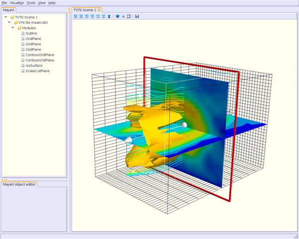
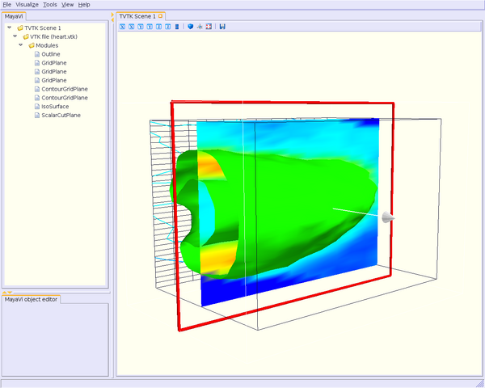

TableOfContents
!MayaVi2 works with two kinds of “objects”: modules and filters.
!MayaVi Users Guide (v. 1.5) by P. Ramachandran defines them as follows:
* "A Module is an object that actually visualizes the data.";
* "A Filter is an object that filters out the data in some way or the other. A simple example is the !ExtractVectorNorm filter. This extracts the magnitude of the selected vector data field attribute for the data file. All modules that use this as an input will receive the vector magnitude as the scalar field data."
You can run !MayaVi2 using one of the following two ways:
* run !MayaVi2 as is, without any options on the command line. You'll manage modules and/or filters using the GUI;
* run !MayaVi2 with some options on the command line, thus loading directly the modules and/or the filters you want to use.
Note: It is supposed here, in order to work, that your PATH variable contains the directory where !MayaVi2 binary is installed (for instance, /usr/local/bin).
Begin to run !MayaVi2:
mayavi2
!MayaVi2 will be launched with a TVTK Scene which is blank.
* Let's start by loading some data. Go into File/Open/Vtk file. This will bring up a file dialogue, use this to select the heart.vtk file under examples/data directory.
The TVTK Scene has not changed, but you see that the file is loaded by looking at the upper left window.
* Now that we have data, we can visualize it. First lets create an outline. Click on "VTK File (heart.vtk)" in the upper left window.
Go into the menu item Visualize/Modules/Outline. This creates an Outline object. We can edit the properties of the outline in the object editor, and we can rotate and manipulate the object in the scene editor.
* Now lets add three grid planes.
Select Visualize/Modules/!GridPlane, this create a grid plane in the X axis. We can create two more grid planes. By selecting Axis in object editor, we can set those grid planes in the Y and Z axis.
* We can project the object onto the Grid planes using contour grid planes. Select Visualize/Modules/Contour grid plane. Do this for the Y, and Z planes as well.
* Now we can look at our data by selecting Visualize/Modules/Isosurface.
* We can now finish adding a scalar cut plane by selecting Visualize/Modules/Scalar Cut Plane. By clicking on the white arrow we can move the plane around.
The result should look like this (for issue concerning background/forground colors, see [:Cookbook/MayaVi/Tips: Cookbook/MayaVi/Tips]):
In order to know what you can set as parameters on the command line, type
mayavi2 -h
This will list all the available options. Amongst all these options are:
* -d file.vtk: set the VTK file to load into !MayaVi2;
* -m ``module``: set the module to use. The following list displays all available modules, in alphabetical order with a short description (taken from Python doc files):
* ``Axes``: draws a simple axes using tvtk.!CubeAxesActor;
* ``!ContourGridPlane``: a contour grid plane module. This module lets one take a slice of input grid data and view contours of the data. The module only works for structured points, rectilinear grid and structured grid input.
* ``!CustomGridPlane``: a custom grid plane with a lot more flexibility than !GridPlane. This also only works for non-unstructured/non-polygonal datasets.
* ``Glyph``: displays different types of glyphs oriented and colored as per scalar or vector data at the input points;
* ``!GridPlane``: a simple grid plane module;
* ``!ImagePlaneWidget``: a simple !ImagePlaneWidget module to view image data;
* ``!IsoSurface``: an !IsoSurface module that allows the user to make contours of input point data;
* ``!OrientationAxes``: creates a small axes on the side that indicates the position of the co-ordinate axes and thereby marks the orientation of the scene. It uses the !OrientationMarkerWidget which requires VTK-4.5 and above.
* ``Outline``: an outline module that draws an outline for the given data;
* ``!ScalarCutPlane``: takes a cut plane of any input data set using an implicit plane and plots the data with optional contouring and scalar warping;
* ``!SliceUnstructuredGrid``: this module takes a slice of the unstructured grid data and shows the cells that intersect or touch the slice;
* ``Streamline``: allows the user to draw streamlines for given vector data. This supports various types of seed objects (line, sphere, plane and point seeds). It also allows the user to draw ribbons or tubes and further supports different types of interactive modes of calculating the streamlines.
* ``!StructuredGridOutline``: draws a grid-conforming outline for structured grids;
* ``Surface``: draws a surface for any input dataset with optional contouring;
* ``Text``: this module allows the user to place text on the screen;
* ``!VectorCutPlane``: takes an arbitrary slice of the input data using an implicit cut plane and places glyphs according to the vector field data. The glyphs may be colored using either the vector magnitude or the scalar attributes.
* ``Vectors``: displays different types of glyphs oriented and colored as per vector data at the input points. This is merely a convenience module that is entirely based on the Glyph module.
* ``Volume``: the Volume module visualizes scalar fields using volumetric visualization techniques. This supports !ImageData and !UnstructuredGrid data. It also supports the !FixedPointRenderer for !ImageData. However, the performance is slow so your best bet is probably with the !ImageData based renderers.
* ``!WarpVectorCutPlane``: takes an arbitrary slice of the input data using an implicit cut plane and warps it according to the vector field data. The scalars are displayed on the warped surface as colors.
* -f ``filter``: set the filter to use (load it before module if you want to see your data filtered). Available filters are:
* ``!CellToPointData``: transforms cell attribute data to point data by averaging the cell data from the cells at the point.
* ``Delaunay2D``: performs a 2D Delaunay triangulation using the tvtk.Delaunay2D class;
* ``Delaunay3D``: performs a 3D Delaunay triangulation using the tvtk.Delaunay3D class;
* ``!ExtractGrid``: allows a user to select a part of a structured grid;
* ``!ExtractUnstructuredGrid``: allows a user to select a part of an unstructured grid;
* ``!ExtractVectorNorm``: computes the norm (Eucliedean) of the input vector data (with optional scaling between [0, 1]). This is useful when the input data has vector input but no scalar data for the magnitude of the vectors.
* ``!MaskPoints``: selectively passes the input points downstream. This can be used to subsample the input points. Note that this does not pass geometry data, this means all grid information is lost.
* ``!PointToCellData``: does the inverse of the !CellToPointData filter;
* ``!PolyDataNormals``: computes normals from input data. This gives meshes a smoother appearance. This should work for any input dataset. Note: this filter is called "Compute Normals" in !MayaVi2 GUI (Visualize/Filters/Compute Normals).
* ``Threshold``: a simple filter that thresholds on input data;
* ``!TransformData``: performs a linear transformation to input data using a tvtk.!BoxWidget. This does not work with !ImageData/StructuredPoints.
* ``!WarpScalar``: warps the input data along a particular direction (either the normals or a specified direction) with a scale specified by the local scalar value. Useful for making carpet plots.
* ``!WarpVector``: warps the input data along a the point vector attribute scaled as per a scale factor. Useful for showing flow profiles or displacements.
Ok, you think you’ll get rapidly tired to type all these long name modules and filters ? Don’t worry, use your shell completion command !
For instance, for (t)csh shell, you can put this line in your configuration shell file:
complete mayavi2 c/-/"(3 d f m n M p q w x z)"/ n/-3/f:*.3ds/ n/-d/f:*.vt?/ n/-f
/"(CellToPointData Delaunay2D Delaunay3D ExtractGrid ExtractUnstructuredGrid Ext
ractVectorNorm MaskPoints PointToCellData PolyDataNormals Threshold TransformDat
a WarpScalar WarpVector)"/ n/-m/"(Axes ContourGridPlane CustomGridPlane Glyph Gr
idPlane ImagePlaneWidget IsoSurface Outline OrientationAxes ScalarCutPlane Slice
UnstructuredGrid Streamline StructuredGridOutline Surface Text Vectors VectorCut
Plane Volume WarpVectorCutPlane)"/ n/-p/f:{*xyz.bin,*.xyz}/ n/-q/f:{*q.bin,*.q}/
n/-w/f:*.wrl/ n/-x/f:*.py/ n/-z/f:*.mv2/
Quite long to type the first time, but once typed, no more effort load the module or filter you want to use ! ;-)
Thus, typing (in !MayaVi2’s examples directory, see [:Cookbook/MayaVi/Installation: Cookbook/MayaVi/Installation]):
mayavi2 -d data/heart.vtk -m Outline -m GridPlane -m GridPlane -m GridPlane -m C
ontourGridPlane -m ContourGridPlane -m IsoSurface -m ScalarCutPlane
you should get this:
Ok, this is not exactly the same as on the previous figure although exactly the same modules have been loaded.
The reason is that you did not set (and you can not, AFAIK) some modules properties, such as iso-value for !IsoSurface module, normals to the !GridPlane, etc.
Hopefully, you can set these parameters “by hand” using the GUI.
So now, let’s play with this GUI ;-)
So, you can see on these two figures the render window on the right (TVTK Scene) beside the modules tree on the left. Let’s consider the first figure.
You can handle rendering scene with the mouse as usual using OpenGL:
* moving the mouse with the left button pressed rotates the scene;
* moving the mouse with middle button pressed translates it;
* and moving the mouse with right button pressed zooms in/out (note: you can also use the wheel of your mouse, if you get one).
Note: You can get a “predefined” angle of view (normal to x axis, y or z) clicking on the “View” item or on each small icons (first X: Ox axis points backwards you, second X: Ox axis points towards you, etc...)
On the left of the window, you can see which modules are loaded (“TVTK Scene” is the “root” of the scene, and “VTK file” is the data source, i.e. the heart.vtk file):
* "Outline" module displays the box surrounding the scene;
* you have three grid planes ("!GridPlane" module), at coordinates x = 0, y = 0, and z = 0;
* two contour grid planes ("!ContourGridPlane" module): the first displays contour lines (vertically), the second, the cutplane at z = const;
* "!IsoSurface" module displays the heart as yellow;
* the last cutplane (vertically, at y = const) is displayed by the "!ScalarCutPlane" module.
Note that no filter is used in these scenes.
Using each module/filter is very intuitive. Click on your module/filter in the tree and set some parameters with the mouse or enter some values at the keyboard, in the window at the bottom left of the GUI.
If you want to copy/paste/delete/cut a given module/filter, click on it with the right button. A small window popups, with a items list.
Note: You can get a larger window double-clicking on the choosen module/filter in the tree.
To load other modules or add filters, click on the “Visualize” item at the top of the window.
At last, you can also load another VTK data file, load/save the scene in a ”!MayaVi2” file (with extension .mv2), or convert it to the image format you want (PNG, JPEG...), clicking on the “File” item or on the appropriate icon (small floppy disk).
You can also get your scene in full-screen clicking on the small icon representing four red arrows in a little square. To disable full-screen mode, type ‘e’ or ‘q’.
This is the simplest way to use !MayaVi2. You are recalled here that you can also try mayavi2 -h to see what options and arguments you can add to the !MayaVi2 command line.
CategoryCookbook